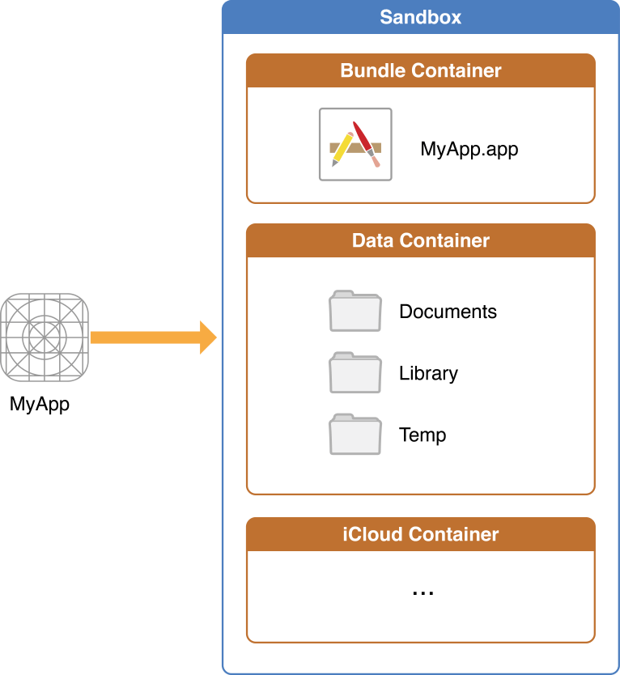
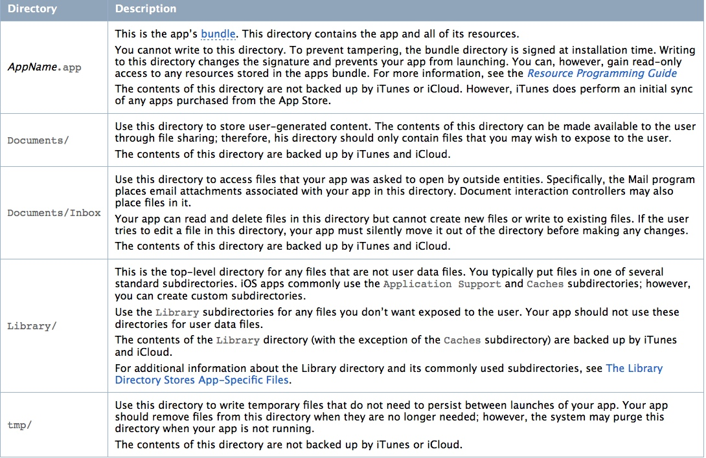

每个App都有自己的沙盒，也就是一个存储空间。App之间没有权限访问对方的沙盒资源。沙盒的目录下有三个文件夹：Documents、Library、temp

目录结构

* Documents：用于存储用户数据，iTunes备份和恢复的时候会包括此目录，所以，苹果建议将程序中建立的或在程序中浏览到的文件数据保存在该目录下。
* Documents/Inbox:主要用来存放其他程序请求当前程序打开的文件。当前App只能读取和删除该目录下的文件，不能新建新文件和修改已存在的文件，如果想修改该目录下已存在的文件，需要将它先移动到别的文件夹下。
* Library：包含两个子目录：Caches 和 Preferences。Caches用来存放用户存放的文件。Preferences是APP的偏好设置，可以通过NSUserDefaults来读取和设置。itunes会备份此目录。
* tmp： 用于存放临时文件，这个可以放一些当APP退出后不再需要的文件。app不运行的时候，系统也可能会销毁此目录保存的临时文件。itunes不备份此目录
目录路径获取
沙盒目录
NSHomeDirectory()
.app
[NSBundle mainBundle].bundlePath
.app 中的资源文件：[[NSBundle mainBundle] pathForResource:@"audio" ofType:@"wav"]
Documents
// 在某个范围内容搜索文件夹的路径 // directory:获取哪个文件夹.这里:NSUserDomainMask 代表从用户文件夹下找
// domainMask:在哪个范围下获取 NSUserDomainMask:在用户的范围内搜索
// expandTilde是否展开全路径, NO:~(选NO存commond+G不进去) YES:显示全路径
NSArray *array = NSSearchPathForDirectoriesInDomains(NSDocumentDirectory, NSUserDomainMask, YES); // 在iOS中,只有一个目录跟传入的参数匹配,所以这个集合里面只有一个元素:
NSString *documentsPath = [array objectAtIndex:0];
Preferences
NSString *preferenceParh = NSSearchPathForDirectoriesInDomains(NSPreferencePanesDirectory, NSUserDomainMask, YES)[0];
Caches
NSString *cachePath = NSSearchPathForDirectoriesInDomains(NSCachesDirectory, NSUserDomainMask, YES)[0];
Tmp
NSTemporaryDirectory()
参考：